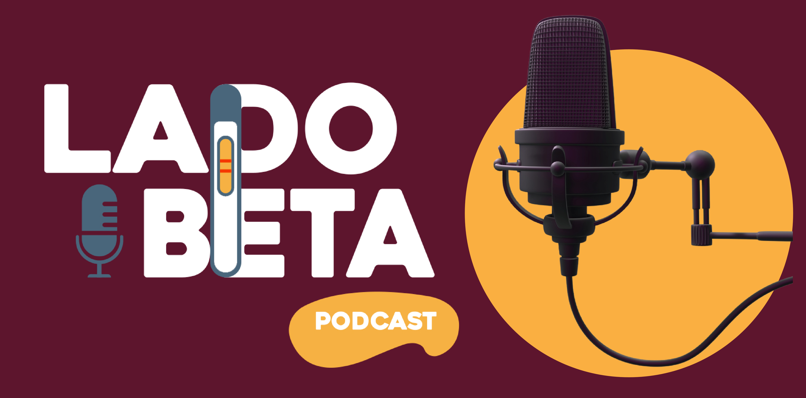
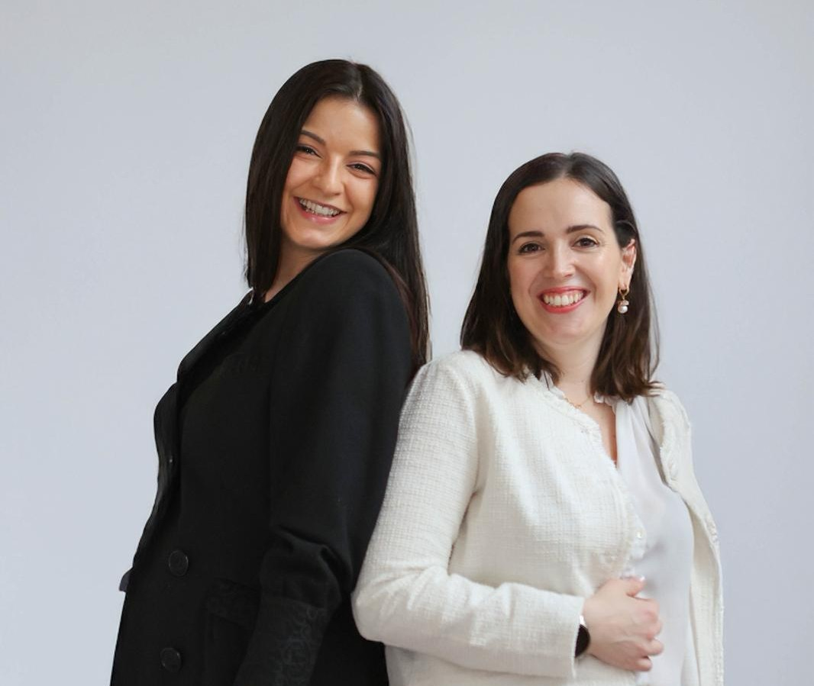

O podcast onde falamos do outro lado da Fertilidade: esperas infinitas, exames complexos, diagnósticos demorados, tratamentos de procriação medicamente assistida, insucessos e finais felizes. Relatos na 1.ª pessoa sobre percursos extremamente desafiantes que valem a pena ser ouvidos. A ciência aliada à emoção, de mãos dadas com a resiliência: sem tabus.

Uma Médica Ginecologista especialista em Procriação Medicamente Assistida e uma Psicóloga que se dedica à saúde sexual, reprodutiva e geral das Mulheres cruzaram caminhos num gabinete e rapidamente descobriram uma missão conjunta: quebrar o silêncio sobre um tema que é cada vez mais real na vida de muita gente. O aumento das taxas de Infertilidade são reais e quanto mais falarmos sobre tudo o que envolve este processo, mais fácil o caminho se poderá tornar para o próximo.
O nome do Podcast vem da β-hCG — a hormona da gravidez — solicitada após tratamento de fertilidade para comprovar o seu resultado. Torna-se assim símbolo de espera, desafio, confirmação, ansiedade, medo, dúvida e resiliência.
Neste caminho da Infertilidade vivem sempre dois lados silenciosos:
Duas profissionais de saúde com uma única missão: dar voz ao que é tantas vezes silenciado.
Ginecologista
Médica especialista em Ginecologia e Obstetrícia, diferenciada em Medicina de Reprodução. Focada em quebrar o tabu sobre a (in)fertilidade e a aumentar a literacia sobre o tema, com base em evidência científica.
Psicóloga Clínica e da Saúde
Tem dedicado a sua carreira à Saúde da Mulher, nomeadamente à Saúde Sexual e Reprodutiva. Acredita que a saúde não se esgota num diagnóstico clínico e promove a capacidade de recuperar a agência sobre o próprio corpo e sobre as suas escolhas e percurso de vida.
O seu trabalho foca-se na gestão do impacto profundo que condições como Endometriose, Adenomiose e Infertilidade exercem na identidade, na autoestima, na dinâmica dos seus relacionamentos e nos seus projetos de vida.
Mais do que gerir sintomas, a sua missão é facilitar o processo de ajustamento psicológico, permitindo a cada pessoa reencontrar o seu bem-estar emocional, propósito, identidade e prazer, independente do diagnóstico associado.
Cada episódio conta-nos uma história única, com a complexidade de cada percurso e com a singularidade emocional vivida dentro de cada coração.
Listas de espera, imprevistos, insucessos e o tempo que não espera.
Diagnósticos, tratamentos de 1.ª e 2.ª linha e respetivos critérios de adesão.
Histórias diferentes narradas na 1.ª pessoa.
Literacia clínica sobre saúde menstrual e reprodutiva, com rigor, sensibilidade e acessibilidade.
Abordagem do impacto emocional nas mais diversas etapas associadas à experiência de Infertilidade.
Onde a evidência científica encontra a experiência humana.
O Lado Beta vai estar disponível nas principais plataformas de podcast.
Deixa o teu e-mail para ficares a saber sempre que um novo episódio ficar disponível!
Obrigada! Vamos avisar-te assim que estivermos no ar.
